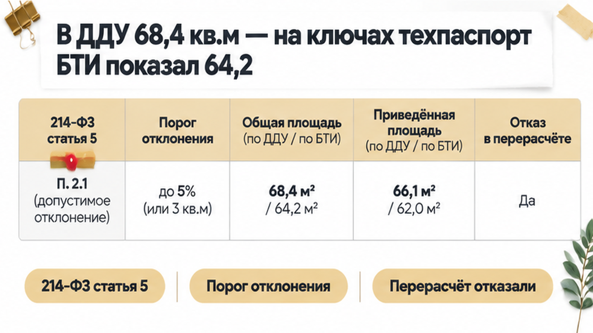
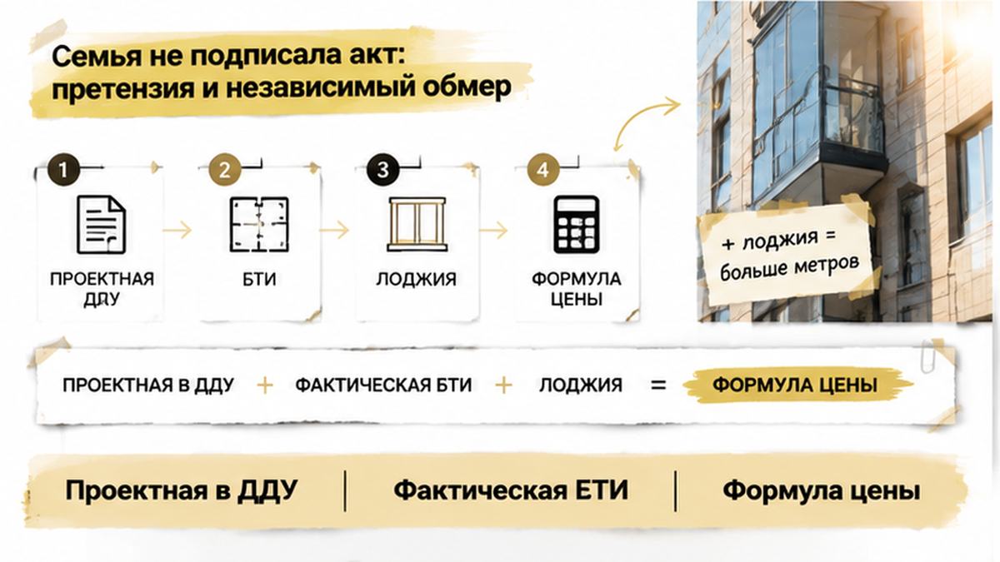
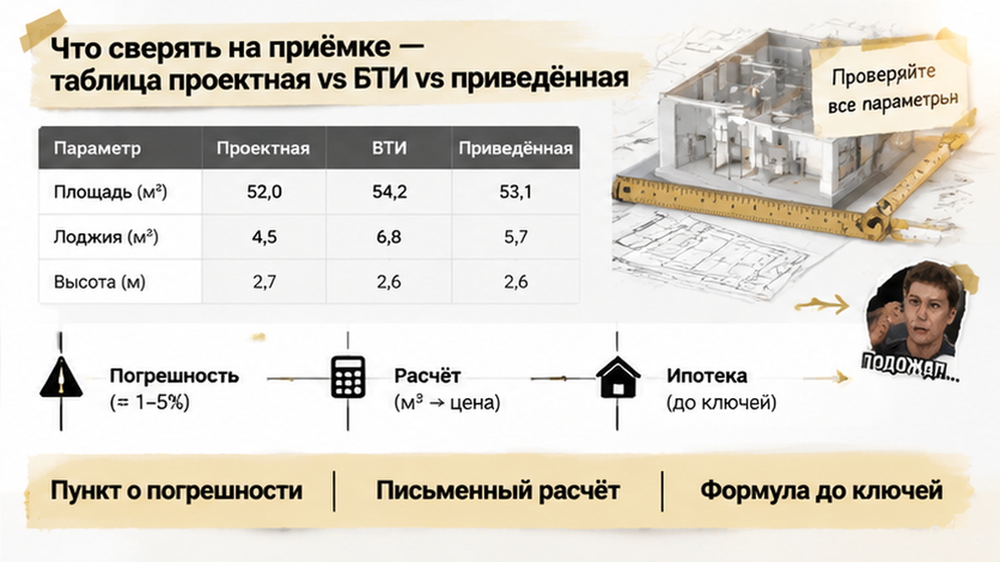

В Тюмени семья обнаружила в новостройке минус 4,2 кв. м: в ДДУ было 68,4, а в техпаспорте БТИ на выдаче ключей — 64,2. Представитель застройщика уже ждал подписи передаточного акта, а банк напоминал о сроке регистрации права по ипотеке. До оформления оставалось два часа, но покупатели решили сначала понять, куда исчезли метры и должен ли измениться расчёт по квартире. На столе лежали ДДУ и документы БТИ, и спор быстро перестал быть разговором о «небольшой погрешности».
Я разбираю такие ситуации в Telegram и MAX — без рекламного тумана, на языке обычной сделки и документов. Подписывайтесь, если принимаете новостройку в Тюмени или только готовитесь к ключам.
Семья покупала трёхкомнатную квартиру по ДДУ. В разделе с площадью стояло 68,4 кв. м — эта цифра была частью расчёта цены. В день выдачи ключей представитель застройщика показал техпаспорт БТИ, где значилось 64,2 кв. м. Разница составила 4,2 кв. м, или примерно 6,1%.

Для покупателя логика кажется очевидной: метров стало меньше — цена должна уменьшиться. Но в новостройке рядом могут использоваться общая и приведённая площадь, а лоджия, балкон, ниши, венткороба и перегородки учитываться по-разному.
Проектная площадь указана в ДДУ. После строительства фактические параметры фиксируются в техническом плане кадастрового инженера и попадают в ЕГРН. На приёмке застройщик может предъявить техпаспорт БТИ или собственный расчёт. Поэтому сравнивать нужно не только 68,4 и 64,2, но и показатель, использованный в разделе «Цена договора».
Цена квадратного метра сама по себе ещё не показывает сумму возврата. Сначала нужно установить, одинаковые ли площади сравниваются и какой порядок перерасчёта записан в ДДУ.
Представитель застройщика сослался на допустимое отклонение по 214-ФЗ и отказал в перерасчёте. Но ссылка на закон не заменяет проверку ДДУ. По части 2 статьи 5 214-ФЗ цена договора может изменяться, если договор предусматривает такие случаи и порядок.
В тексте нужно найти порог отклонения, понять, от какой площади он считается, и проверить, идёт ли речь об общей или приведённой площади. Там же может быть указан порядок возврата переплаты.
Если порог не согласован, уменьшение площади может рассматриваться как отступление от условий договора, связанное с соразмерным уменьшением цены. На такую логику Верховный суд указывал в определении от 9 марта 2021 года № 48-КГ20-21-К7.
При этом разница площадей не во всех случаях является недостатком квартиры. В определении от 4 марта 2025 года № 127-КГ24-25-К4 Верховный суд отметил, что вопрос нужно решать через механизм перерасчёта, предусмотренный ДДУ.
Поэтому не работают универсальные фразы «застройщик всегда обязан вернуть деньги» и «до пяти процентов никто ничего не возвращает». Нужно сопоставить пункт договора с документом БТИ, проверить формулу и только после этого решать, подписывать ли передаточный акт.
Семья внесла на эскроу полную стоимость квартиры по ДДУ — за 68,4 кв. м. На выдаче ключей в техпаспорте БТИ появилась другая цифра: 64,2 кв. м.
Само расхождение не запускает автоматический возврат: эскроу-счёт не сравнивает проектную и фактическую площадь. Если меньший размер подтверждён, переплату обычно считают так: разницу умножают на цену одного квадратного метра из договора.
Сначала нужно проверить, что сравниваются одинаковые показатели. В ДДУ может быть указана общая или приведённая площадь, а в техпаспорте — фактические размеры помещений. В договоре также могут быть прописаны допустимый порог отклонения и порядок перерасчёта.
Если счёт ещё не раскрыт, порядок возврата нужно согласовать с застройщиком и банком. После раскрытия эскроу требование предъявляется застройщику — через претензию, соглашение или суд. Банк цену квартиры не пересчитывает: он проводит расчёты по условиям сделки.
На выдаче ключей стоит просить не устное «всё в пределах нормы», а техпаспорт БТИ или технический план, расчёт по каждой площади и письменный ответ со ссылкой на пункт ДДУ.
Фразу «до пяти процентов ничего не возвращаем» нужно сверить с договором. 214-ФЗ не устанавливает единого федерального порога, который автоматически подходит всем ДДУ. Важны условия договора и цифры, подтверждённые обмером.
Если эскроу связан с ипотекой, добавляется банковская цепочка. В разборе о семейной ипотеке на новостройку я показывал, почему статус «ипотеку одобрили, а эскроу не открыли» ещё не означает готовность сделки к регистрации.
Здесь деньги уже зарезервированы, но основание для передачи квартиры и окончательной регистрации права оказалось спорным.
До подписания передаточного акта оставалось два часа, когда банк напомнил семье о сроке регистрации права по ипотеке. Для кредитора в комплекте документов обычно нужен подписанный акт.
Так возникло давление: с одной стороны — 4,2 кв. м и неясный перерасчёт, с другой — банковский срок. Подписать акт ради ключей можно, но после этого спор о площади придётся вести уже после передачи квартиры.
Подпись сама по себе не лишает дольщика права требовать возврат, если меньшая площадь подтверждена документами. Однако до подписания проще зафиксировать расхождение прямо на месте.
Верховный суд в 2023 году рассматривал ситуацию, в которой дольщик после подписания акта смог требовать возврат за разницу площадей. Но отказ от подписи тоже не является безрисковым решением: застройщик может оформить односторонний акт в предусмотренном законом порядке, а регистрация права по ипотеке может задержаться.
Поэтому отказ нужно сопровождать актом осмотра, письмами и документами, а не оставлять на уровне разговора у окна выдачи ключей. Банку стоит письменно сообщить, что задержка связана со спором о площади.
В похожем разборе о ситуации, когда регистрацию права отменили из-за строки в ЕГРН, я отдельно показывал: такая переписка не останавливает срок автоматически, но помогает зафиксировать причину паузы.
Семья попросила письменный расчёт площади и пункт ДДУ о цене. Устного «подпишете акт — деньги обсудим потом» на стойке выдачи ключей они не приняли.
Акт не подписали и ключи не получили: разницу в 4,2 кв. м нужно было сопоставить с формулой, записанной в договоре, а не с устным обещанием.

Первый шаг — письменно зафиксировать расхождение. В акте осмотра указывают цифры из ДДУ и документа БТИ, а застройщику передают претензию с требованием дать расчёт и объяснить отсутствие перерасчёта.
Одной фразы «мы не согласны» на стойке выдачи ключей недостаточно. Нужны документы, дата, подпись принимающей стороны или подтверждение отправки. Если застройщик уклоняется от приёмки, это также фиксируют письменно.
Тянуть бесконечно нельзя: при длительном уклонении дольщика застройщик может оформить односторонний акт в предусмотренном законом порядке. А ипотечная регистрация может задержаться, и банку придётся объяснять причину паузы.
Если расчёт застройщика не сходится, независимый обмер кадастрового инженера поможет понять, одинаковые ли показатели сравниваются, какие помещения вошли в площадь и откуда взялась каждая цифра.
Подписание акта не всегда закрывает дорогу к возврату. В 2023 году Верховный суд рассматривал ситуацию, когда дольщик после подписания акта смог требовать возврат за разницу площадей, подтверждённую обмерами. Но до подписи проще зафиксировать вопрос на месте, чем потом восстанавливать картину по переписке и экспертизам.
На приёмке новостройки нельзя заменять проверку подписью ради ключей — принцип тот же, что и при споре об отделке. А история с переносом ключей и замороженными деньгами показывает, почему в ипотечной сделке важно смотреть на всю цепочку документов: деньги могут оставаться на эскроу, пока передача объекта откладывается.
Вы бы подписали акт ради ключей или заблокировали регистрацию, пока застройщик не пересчитает цену?
На приёмку лучше взять три источника цифр: ДДУ, документ с итоговым обмером и расчёт приведённой площади. Смотреть нужно не на название бумаги, а на показатель, который связан с ценой договора.
| Что сравнивать | Проектная площадь в ДДУ | Фактическая площадь по БТИ или техплану | Приведённая площадь |
|---|---|---|---|
| Откуда берётся | Из проектной документации и условий ДДУ | Из итогового обмера после строительства | Из площади помещений с учётом коэффициентов для лоджий и балконов |
| Зачем нужна | Для расчёта цены и описания объекта на этапе покупки | Для проверки результата и подготовки сведений о построенной квартире | Для расчёта показателя, если именно он указан в разделе ДДУ о цене |
| Что проверить | Единицы измерения, состав помещений, пункт о допустимом отклонении | Расшифровку по помещениям, методику обмера, ниши, венткороба и перегородки | Коэффициент лоджии или балкона и совпадение с формулой договора |
| Что означает разница | Показывает исходное обязательство по договору | Может стать основанием для перерасчёта при подтверждённом уменьшении | Не заменяет общую площадь, если договор считает цену по другому показателю |
В этой истории 68,4 кв. м в ДДУ и 64,2 кв. м в документе БТИ дают разницу 4,2 кв. м — примерно 6,1% от проектной площади. Это уже не та цифра, которую разумно закрыть фразой «стяжка немного съела метры».
Арифметики недостаточно: сначала нужно убедиться, что сравниваются одинаковые показатели, затем прочитать пункт ДДУ о цене. Там могут быть указаны общая или приведённая площадь, порог отклонения и порядок перерасчёта.
Эскроу автоматически не пересчитывается. Если меньшая площадь подтверждена, требование о возврате переплаты предъявляют застройщику, а не банку.

Если вы принимаете новостройку в Тюмени и видите расхождение в площади, разберите документы до подписи. В Telegram и MAX я показываю, где в ДДУ искать формулу цены и какие бумаги запросить у застройщика.
Семья остановилась до подписи: сверила пункт ДДУ о погрешности, запросила письменный расчёт и решила подтвердить площадь независимым обмером. Это не отменяет ипотечные сроки и не гарантирует мгновенный возврат, зато решение принимается не вслепую.
Новостройку в Тюмени можно принимать спокойнее, если формулу цены проверить до ключей, а не после регистрации. На этом этапе я подключаюсь, чтобы разобрать документы и расчёт до подписи акта.